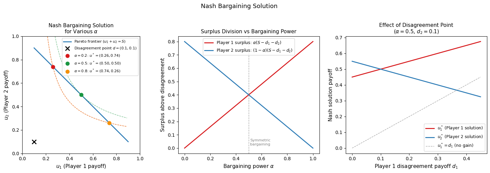
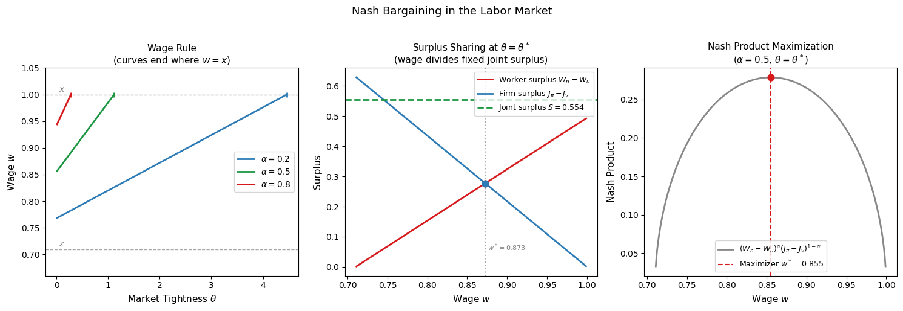

Nash Bargaining and Wage Determination#
Introduction#
In competitive labor markets, wages are determined by market clearing: supply equals demand. In the search and matching model, this mechanism is unavailable. Matching frictions mean that when a worker and a firm meet, they find themselves in a bilateral relationship with no market price to coordinate on. The wage must instead be determined by negotiation.
These notes review the theory of Nash bargaining and applies it to wage determination in the search and matching model. First, we present the axiomatic foundations of the Nash bargaining solution — the four properties that any reasonable bargaining outcome should satisfy, and the theorem that characterizes the unique solution satisfying all four. Second, we connect the Nash solution to the labor market by identifying the surpluses and threat points of workers and firms. Third, we derive the equilibrium wage equation and provide an economic interpretation.
The Nash Bargaining Problem#
A bargaining problem consists of two objects:
A feasible set \(U \subset \mathbb{R}^2\): the set of utility pairs \((u_1, u_2)\) that the two players can jointly achieve through some agreement.
A disagreement point \(d = (d_1, d_2) \in \mathbb{R}^2\): the utility pair that each player receives if no agreement is reached — the outside option, or threat point.
A bargaining solution is a function \(f: (U, d) \mapsto (u_1, u_2)\) that selects a particular outcome from the feasible set. Rather than modeling an explicit negotiation game, Nash (1950) took an axiomatic approach. He specified four properties that any reasonable bargaining solution should satisfy, and showed that there exists a unique solution which satisfies all four properties.
The Four Axioms#
Axiom 1: Invariance to affine transformations. The bargaining solution should not depend on the units in which utility is measured. Formally, if we transform the utility functions by any affine mapping — replacing \(u_i\) with \(\alpha_i u_i + \beta_i\) for constants \(\alpha_i > 0\) and \(\beta_i\) — the solution should transform in the same way:
where \(U' = \{(\alpha_1 u_1 + \beta_1, \alpha_2 u_2 + \beta_2) \mid (u_1, u_2) \in U\}\). This axiom formalizes the idea that the bargaining outcome reflects the underlying preferences of the players, not the arbitrary scaling of their utility representations.
Axiom 2: Pareto optimality. The solution must be Pareto efficient. There should be no agreement \(u' \in U\) such that \(u' \geq f(U)\) with strict inequality for at least one player. A solution that leaves a Pareto improvement on the table is implausible — the players would have an incentive to renegotiate to the dominating outcome.
Axiom 3: Independence of irrelevant alternatives. Consider two bargaining problems with feasible sets \(U' \subseteq U\). If the solution to the larger problem lies within the smaller set — \(f(U) \in U'\) — then the solution to the smaller problem should be the same: \(f(U') = f(U)\). Removing agreements that would never be chosen anyway should not affect the outcome.
Axiom 4: Symmetry. If the bargaining problem is symmetric — \((u_1, u_2) \in U\) if and only if \((u_2, u_1) \in U\), and \(d_1 = d_2\) — then the solution should treat the players equally: \(f_1(U) = f_2(U)\). Players who look identical should receive identical payoffs.
The Nash Bargaining Theorem#
Theorem: Nash Bargaining Solution
The unique bargaining solution satisfying Axioms 1–4 is the Nash bargaining solution:
subject to \((u_1, u_2) \geq (d_1, d_2)\).
The Nash solution selects the agreement that maximizes the product of the players’ surpluses above their disagreement payoffs. The geometric interpretation is instructive: the solution lies at the point on the Pareto frontier of \(U\) where the hyperbola \((u_1 - d_1)(u_2 - d_2) = c\) is tangent to the feasible set, for the highest attainable \(c\).
It is worth noting that Nash’s axiomatic approach has a strategic foundation. Rubinstein (1982) showed that the Nash solution emerges as the unique subgame perfect equilibrium of an alternating-offer bargaining game in which players discount time at rate \(r\) and the probability of breakdown is \(\delta\), in the limit as \(\delta \to 0\). The axioms are therefore not merely normative desiderata — they have a game-theoretic rationalization.
Asymmetric Nash Bargaining#
The symmetry axiom (Axiom 4) can be relaxed to allow for asymmetric bargaining power. The asymmetric Nash bargaining solution assigns bargaining power \(\alpha \in (0, 1)\) to Player 1 and \(1 - \alpha\) to Player 2:
subject to \((u_1, u_2) \geq (d_1, d_2)\).
The parameter \(\alpha\) governs the division of the joint surplus:
If \(\alpha = 1/2\): symmetric bargaining — both players receive equal surplus above their threat points (the original Nash solution).
If \(\alpha \to 1\): Player 1 captures all the surplus — Player 2 receives only their disagreement payoff \(d_2\).
If \(\alpha \to 0\): Player 2 captures all the surplus — Player 1 receives only \(d_1\).
In macroeconomic applications, \(\alpha\) is typically treated as a structural parameter reflecting the relative negotiating strength of workers versus firms, determined by institutional factors outside the model.
Numerical Illustration#
The following code visualizes the Nash bargaining solution geometrically for a simple linear feasible set, showing how the solution varies with bargaining power \(\alpha\) and the disagreement point \(d\).

The left panel shows the Nash solution geometrically. The Pareto frontier (blue line) is the set of all efficient agreements. The disagreement point (black cross) is the outside option for each player. The Nash solution lies at the point on the frontier where the Nash product hyperbola \((u_1 - d_1)(u_2 - d_2) = c\) is tangent to the frontier; as \(\alpha\) increases, the solution moves along the frontier in favor of Player 1. The middle panel shows that each player’s surplus above their disagreement payoff varies linearly with \(\alpha\): Player 1 captures fraction \(\alpha\) of the joint surplus and Player 2 captures fraction \(1-\alpha\). The right panel shows that a higher disagreement payoff \(d_1\) raises Player 1’s solution payoff — a better outside option translates directly into a higher negotiated outcome — while reducing Player 2’s payoff, since the joint surplus available for division shrinks.
Application to the Labor Market#
Surpluses and Threat Points#
We now apply the Nash bargaining framework to wage determination in the search and matching model. A worker and a firm that have just matched must agree on a wage \(w\). If they agree, the worker becomes employed and the firm begins producing; if they disagree, the worker returns to unemployment and the firm returns to posting a vacancy.
The worker’s surplus from agreeing to a wage \(w\) is the gain in expected lifetime utility from employment relative to unemployment:
where \(W_n\) is the present discounted value of employment and \(W_u\) is the present discounted value of unemployment. From the Bellman equation for an employed worker:
solving for \(W_n - W_u\):
which after rearranging gives:
This expression has a clean interpretation. The worker’s surplus is the wage premium over non-employment income \(w - z\), discounted at the effective rate \(r + f(\theta) + s\). The job-finding rate \(f(\theta)\) enters the discount rate because a higher \(f(\theta)\) means the worker could find an equivalent job quickly even if this match dissolves — reducing the value of the current match relative to unemployment. The separation rate \(s\) enters because a higher \(s\) shortens the expected duration of the employment spell.
A worker will only accept a wage \(w \geq z\): below this threshold, employment is worth less than unemployment and the worker prefers to keep searching.
The firm’s surplus from agreeing to a wage \(w\) is the gain in expected profits from having a filled job relative to a vacancy. Under free entry, \(J_v = 0\), so:
The firm’s surplus is the present discounted value of flow profits \(x - w\), discounted at rate \(r + s\). A firm will only accept a wage \(w \leq x\): above this threshold, the job generates negative profits and the firm prefers to remain vacant.
The Joint Surplus and Quasi-Rents#
For any incentive-compatible wage \(z \leq w \leq x\), the value of a filled job strictly exceeds the sum of the values of searching:
The difference is the joint surplus — the total value created by the match above what both parties could obtain by remaining unmatched:
The joint surplus is strictly positive because matching is costly: once a firm and worker have found each other, they save on future search costs by staying together. These savings are the quasi-rents of the match — rents that exist only because of the friction that makes finding a new partner costly. The wage determines how these quasi-rents are divided between the worker and the firm.
The Nash Bargaining Problem#
The bargained wage solves:
where the worker’s threat point is \(W_u\) (return to unemployment) and the firm’s threat point is \(J_v = 0\) (return to vacancy posting).
Key Property: Linearity in \(w\)
Both \(W_n - W_u\) and \(J_\pi - J_v\) are linear in \(w\): the former is increasing in \(w\) and the latter is decreasing in \(w\). This linearity means the Nash bargaining problem has a particularly clean solution: the optimal wage simply allocates fraction \(\alpha\) of the joint surplus to the worker and fraction \(1-\alpha\) to the firm, regardless of the specific values of the parameters.
Taking the first-order condition of the Nash product with respect to \(w\) and using the linearity property:
Since \(\partial(W_n - W_u)/\partial w = 1/(r+s)\) and \(\partial(J_\pi)/\partial w = -1/(r+s)\), the derivatives are equal and opposite, giving the surplus sharing rule:
Equivalently:
The worker receives fraction \(\alpha\) of the joint surplus; the firm receives fraction \(1-\alpha\).
Deriving the Wage Equation#
To obtain an explicit expression for \(w\), we substitute the Bellman equations and the free entry condition into the surplus sharing rule.
Step 1. From the surplus sharing rule (1) with \(J_v = 0\):
Step 2. Substituting \(W_n - W_u = (w-z)/(r+f(\theta)+s)\):
Step 3. Using the Bellman equation for an unemployed worker to express \(rW_u\) explicitly:
where the last equality uses \(f(\theta) = \theta q(\theta)\) and the free entry condition \(J_\pi = \gamma/q(\theta)\) combined with the sharing rule.
Step 4. Substituting into the wage expression:
This is the Nash bargaining wage rule. Each term has a precise economic interpretation:
\(\alpha x\): the worker’s share of output — fraction \(\alpha\) of the marginal product of labor accrues to the worker.
\(\alpha\gamma\theta\): the recruiting cost premium — the worker is compensated for the hiring costs saved by the firm when the match is formed. The total hiring cost in the economy is \(\gamma\mathcal{V} = \gamma\theta\mathcal{U}\), so \(\gamma\theta\) is the average cost per unemployed worker. By agreeing to the match, the worker saves the firm from bearing this cost, and receives fraction \(\alpha\) of the saving as additional compensation.
\((1-\alpha)z\): the reservation wage floor — even with zero bargaining power, the worker must be compensated for foregone non-employment income \(z\).
The Role of Market Tightness#
Labor market tightness \(\theta\) enters the wage equation through two distinct channels, which are important to distinguish.
The direct channel operates through the recruiting cost premium \(\alpha\gamma\theta\). A tighter market means firms face higher average recruiting costs, so the saving from avoiding further search is larger, and workers can negotiate a higher wage.
The indirect channel operates through the worker’s threat point \(W_u\). When the market is tight, the job-finding rate \(f(\theta)\) is high, meaning an unemployed worker can quickly find another job. This improves the worker’s outside option — their threat point \(W_u\) is higher — which strengthens their bargaining position and raises the negotiated wage.
Both channels operate in the same direction: tighter markets raise wages. The degree to which tightness affects the wage depends on the primitive bargaining power \(\alpha\): a worker with \(\alpha = 0\) has no ability to exploit their improved outside option and receives only \(z\) regardless of \(\theta\); a worker with \(\alpha = 1\) captures the entire joint surplus and the wage equals the full output \(x + \gamma\theta\).
Numerical Illustration#
The following code solves the full Nash bargaining problem numerically, plots the wage as a function of market tightness and bargaining power, and illustrates the surplus sharing rule.
r + s = 0.460
Equilibrium:
θ* = 0.1354
w* = 0.8726
f(θ*) = 0.1271
r + s + f(θ*)= 0.5871
Surpluses at w*:
Worker = 0.2769 (α·S = 0.2769)
Firm = 0.2769 ((1-α)·S = 0.2769)
Joint S = 0.5539 (worker+firm = 0.5539)
Additivity check at w=z+0.01: ws+fs = 0.6257, S = 0.5539
Additivity check at w=x-0.01: ws+fs = 0.4986, S = 0.5539

The printed output confirms the surplus sharing rule: at the equilibrium wage, the worker’s share of the joint surplus equals exactly \(\alpha = 0.5\). The left panel shows the wage rule as a function of market tightness for three values of \(\alpha\). All three curves lie between \(z\) (the minimum acceptable wage) and \(x\) (the maximum the firm will pay), and are upward-sloping in \(\theta\) — reflecting both the direct recruiting cost channel and the indirect outside-option channel. A higher \(\alpha\) shifts the entire wage schedule upward: workers with greater bargaining power extract more of the match surplus at every level of tightness.
The middle panel plots the worker and firm surpluses as functions of the wage, holding tightness at \(\theta^*\). The worker surplus is increasing in \(w\) and the firm surplus is decreasing in \(w\), both linearly — the linearity that makes the Nash solution analytically tractable. The Nash bargaining solution is at the wage where the weighted product of these surpluses is maximized, shown in the right panel: the Nash product has a unique interior maximum at \(w^*\), confirming that the analytical wage rule (2) correctly identifies the optimum.
Conclusion#
The Nash bargaining framework provides a rigorous and tractable foundation for wage determination in the search and matching model. Its four axioms — affine invariance, Pareto optimality, independence of irrelevant alternatives, and symmetry — uniquely characterize a solution that maximizes the weighted product of the two parties’ surpluses above their threat points.
In the labor market, the threat points are the values of continued search: \(W_u\) for the worker and \(J_v = 0\) for the firm under free entry. The joint surplus from a match is strictly positive because matching is costly — the quasi-rents from having found each other must be divided. The Nash solution allocates fraction \(\alpha\) to the worker and \(1-\alpha\) to the firm, yielding the wage rule \(w = \alpha(x + \gamma\theta) + (1-\alpha)z\).
This wage rule has three components: the worker’s share of output \(\alpha x\), the recruiting cost premium \(\alpha\gamma\theta\) that compensates the worker for saving the firm from further search, and the reservation wage floor \((1-\alpha)z\) that ensures the worker is compensated for foregone non-employment income. Market tightness \(\theta\) enters the wage through both the recruiting cost premium and the worker’s outside option, generating the upward-sloping wage rule that is the key behavioral equation on the worker side of the search and matching equilibrium.